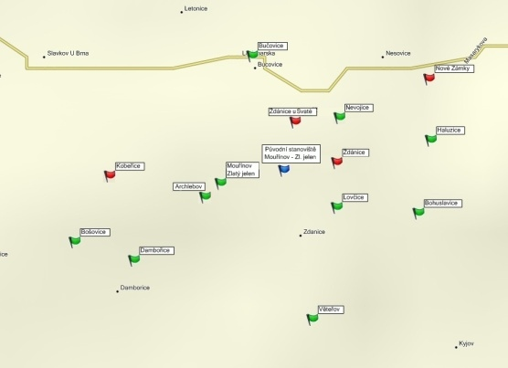
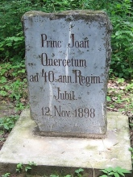

| Historická zemì: | Morava |
| Souèásti panství Buèovice: | Buèovice, Bohuslavice, Brankovice, díl Èernèína, Klobouèky, Kožušice, Letošov, Malínky, Marefy, Mouchnice, Nemotice, Nevojice, Snovídky, Uhøice, statek Milonice, statek Nemochovice, statek Nové Zámky, Dobroèkovice, Nesovice, statek Vícemilice. |
| Souèásti panství Ždánice: | Ždánice, Archlebov, Bošovice, Damboøice, Dražùvky, Velké Hostìrádky, Karlov, Kobeøice, Lovèice, Lovèièky, Milešovice, Mouøínov, Násedlovice, Nechvalín, Nenkovice, Nížkovice, Ostrovánky, Otnice, Uhøice, Vìteøov, Želetice. K lichtenštejnskému majetku patøil také statek Žarošice se Silniènou a Zdravou Vodou. |
| Pùvodní lesní revíry: | Archlebov, Bohuslavice, Bošovice, Damboøice, Haluzice, Kobeøice, Lovèice, Mouøínov, Nevojice, Nové Zámky, Vìteøov, Ždánice. |
Mapa památníkù v oblasti:

Zdokumentované památníky:
Mouøínov (U Zlatého jelena)
Nedochované památníky:
Kobeøice
Nové Zámky
Ždánice
Ostatní památky:


{kind=link}
{kind=link}
{kind=link}
{kind=link}
{kind=link}
{kind=link}
{kind=link}
{kind=link}